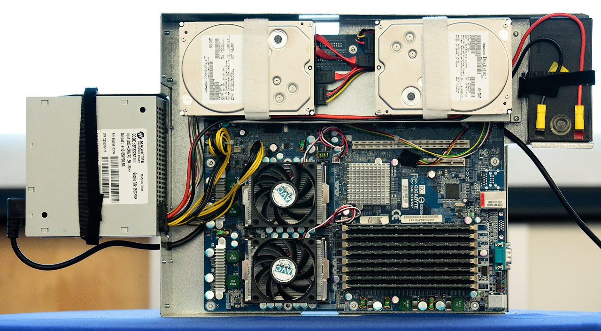
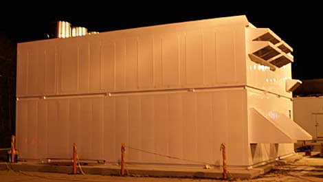
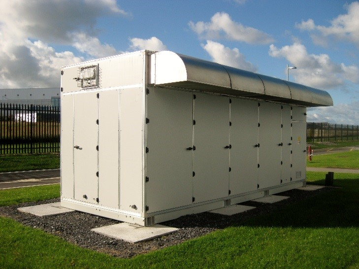

DIY相信大家都知道，就是自己动手做的意思(Do It by Youself)，而云计算呢？那么何谓云计算，云计算与分布式计算，网格计算的差异在哪里？DIY与云计算能扯得上关系么？然后顺着DIY思路再看看国内，谁能告诉我真正的国内的云计算数据中心在哪里？
在我看来，目前云计算是以超大规模的服务器组成若干数据中心，通过商业运营，为互联网提供可伸缩的，按需供给的基础设施服务。对于希望能对整个互联网提供商业运营服务，如此超大规模的可配置的数据中心，成本就是关键，对于超大规模来说，哪怕是一台的成本能节约100元，那么以万台计算，就可以节约百万，无论采购成本还是运营成本在超大规模的运营下每台的小额节省将会极大的增强成本竞争力。
真正的云计算服务是离不开DIY的，越有技术能力的公司DIY的程度越深，从硬件到软件无一不是在深度定制，用以压榨出更多硬件性能和节能。下面以Google举例来说。Google 的数据中心一直以来都是戒备森严的禁地，众所周知，Google和Amazon这些大佬总是对数据中心内部运营状态严格保密，因为Google把自己在对数据中心服务器的DIY定制能力视作为公司的核心竞争力之一。事实上google一直对于自己定制数据中心硬件严加保密，直到2009年才对外开了一个窗，向外界展示了它5年前的google定制数据中心的面貌。Google 定制自己的主板、机箱、机柜（集装箱），乃至数据中心，甚至利用地势来节能。
Google 展示了自己DIY的一种服务器，使用一个12瓦电池供电，这比数据中心的 UPS 更可靠。Rich Miller 在一篇关于数据中心的博客文章中表示，这个设计让 Google 的 UPS 利用率达到99.9%，而一般数据中心只能达到92%～95%。
{kind=link}

在 Google 2009年数据中心节能峰会上，Google 表示他们的能效比（PUE - 数据中心总能耗与IT设备能耗比）已经从2008年第三季度的1.21下降到2008年第四季度的1.16。PUE 为 1 表示数据中心没有能源损耗，而根据2006年的统计，一般公司数据中心的能效比为 2.0 或更高。Google 的 1.16 已经低于美国能源部2011年的1.2 的目标。
数据中心 DIY
为啥大家不租用现成的数据中心机房，都要自建？
目前大多数机房都是固定按月或按年收取费用，费用太高，已经不适应按需提供服务发展。未来机房如果要发展，必须要能够按功能计费以及按消耗计费。否则这些新建的数据中心未来可能就会取代现有机房模式。
机房功能：
- 空调
- UPS
- 交流电源
- 直流电源
- …
计费功能:
- 消耗电量计费
- 设备损耗计费
- …
模组化数据中心是目前数据中心的一个普遍趋势。
下图是Amazon DIY的Perdix数据中心模块：

这是微软的ITPAC数据中心模组：

开源云计算数据中心
与严格保密的Google不同，Facebook不仅全新设计的服务器和数据中心，并且将其设计方案开源，这简直是对Google莫大的蔑视。在Google，每一个Google员工都需要签署一份保密协议，而这在Facebook根本不需要。这也使得微软也公布了都柏林数据中心的部分细节。不过，据Google前员工透露，Google的数据中心因为持续仅10年不断创新改进而十分强大。但开放的Facebook却获得了更多拥护者，包括英特尔、Dell、华硕、Rackspace都加入了Open Compute Project中。
去年4月，Facebook发布Open Compute Project，对其服务器以及数据中心的架构进行了开源，意在加速数据中心和服务器创新。Facebook此次不仅公开了技术文档，甚至连服务器和数据中心的CAD图纸设计也完全公开。也有人说Facebook此举是在讽刺Google，后者的数据中心和服务器领域技术公认非常领先，但一直视为独门绝技，密不示人。
Facebook的数据表明，他们的定制硬件各方面指标比业界标准要高得多，与公司从设备厂商购买的同类现成产品相比，效率提升38%，成本则降低了28%。而整个数据中心的能耗按PUE(Power Usage Effectiveness，电能使用效率)衡量是1.07，大大低于业界通常的1.5。
在Facebook新服务器中，电源传输到微处理器的方式就完全不同。Facebook硬件团队改变了服务器的布局和电源供应方式，甚至连电源线和电源插头都被重新设计，而且服务器的组装和维护无需任何工具。新式服务器的易用性是Facebook硬件团队的最大创新之一。米迦勒说：“当你拥有数万台服务器时，每小时都会出现宕机问题，例如硬盘损坏，内存损毁等。我们的数据中心技术人员负责维护服务器。有时，他们会用上一整天的时间安装服务器配件。我们希望让他们的工作尽可能地轻松，并且更有效率。无需任何工具我们便可组装服务器，多数组件的组装速度是一般服务器组件的2至10倍。”为了寻找新的硬件制造商，Facebook团队成员一次又一次地往返在美国与台湾之间。在招募一名机械工程师的同时，Facebook还起草了一份50多页的新服务器设计说明书。米迦勒表示：“在白纸上设计是一回事，而设计细节更需要慎重。我们要定制所有的组件，并且要重新设计服务器，这些尤其应当谨慎。”
DIY 云计算服务器
按不同的功能需求定制自己的服务器，云计算服务器可以分为三类：
- 虚拟计算机服务
- 存储服务
- Cache服务
改造1： 这三类服务器通用的DIY功能就是DC电源，将DC电源外置，不在主板内的好处有两个好处，1个是直接DC供电；2是可以直接使用电池作为紧急电源取消UPS提供用电效率。
改造2：使用PC的CPU、主板、内存代替服务器CPU、主板和内存节约成本。
对于虚拟计算机服务，CPU频率、CPU虚拟化以及IO虚拟化与提供的虚拟后的性能息息相关，所以应根据自己云计算业务能力来决定。
而对于存储服务这块，可定制和创新的方方面面更多些。